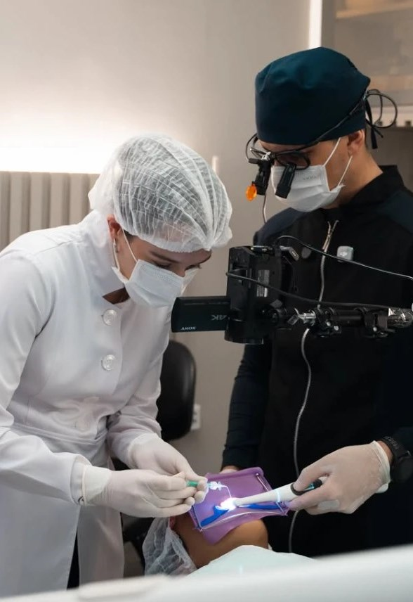
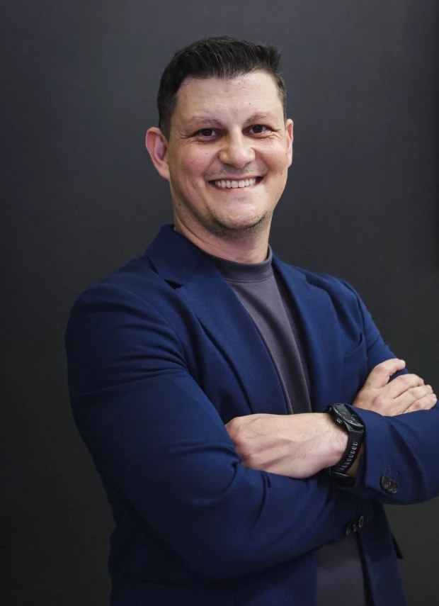
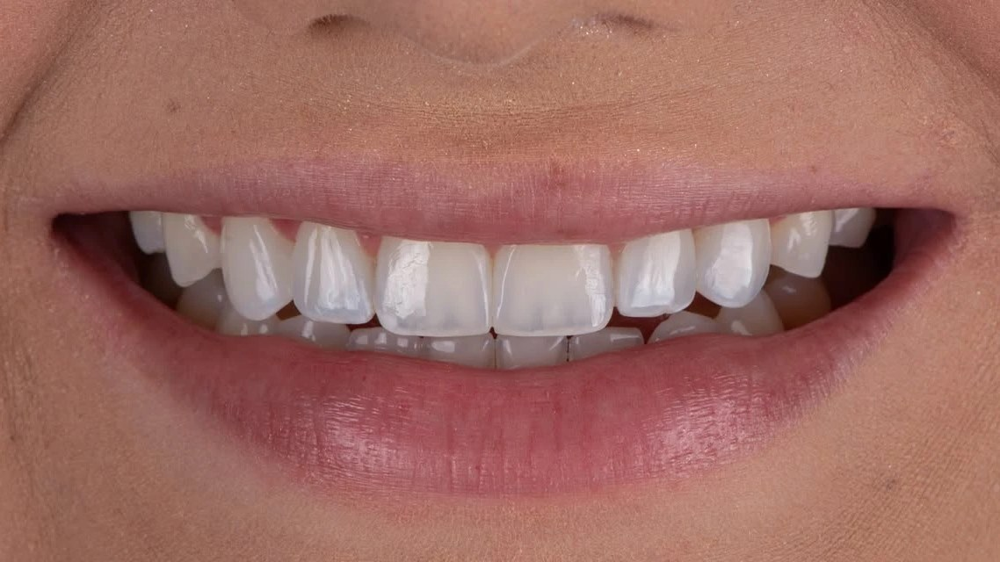
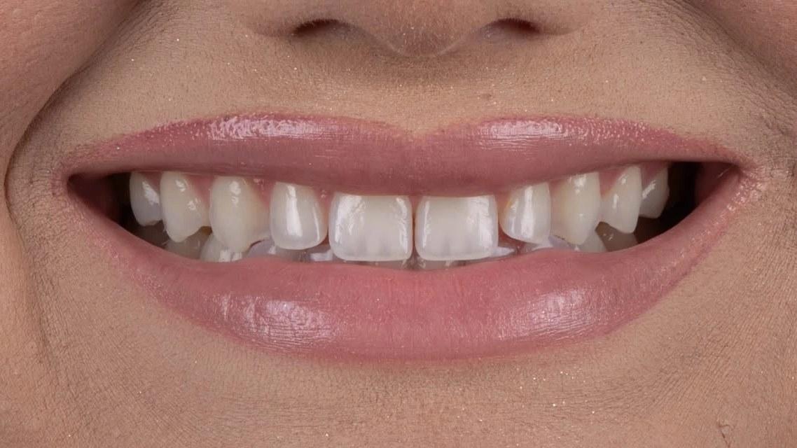
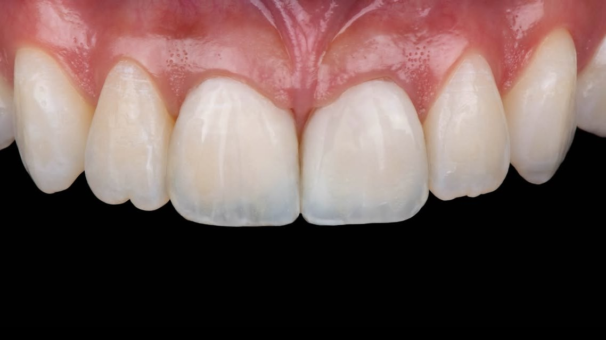
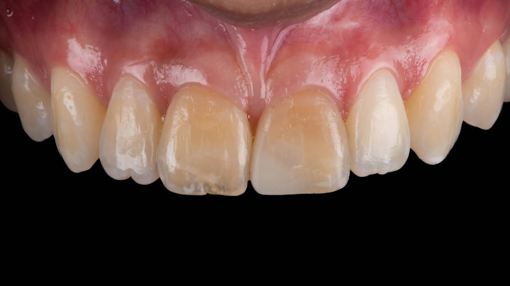
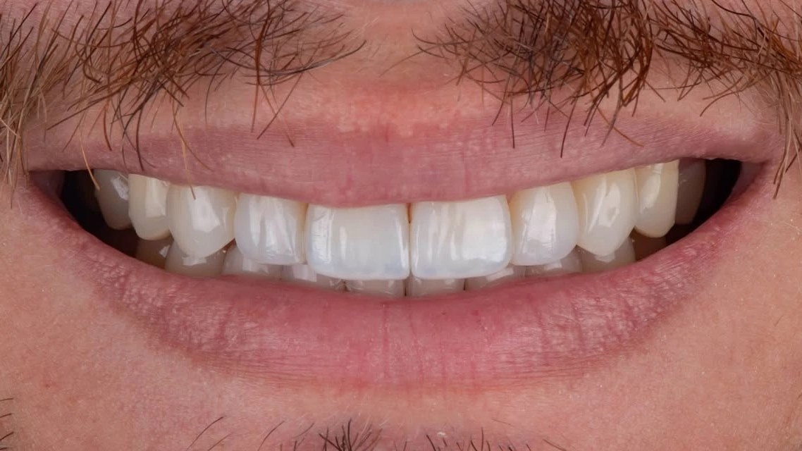
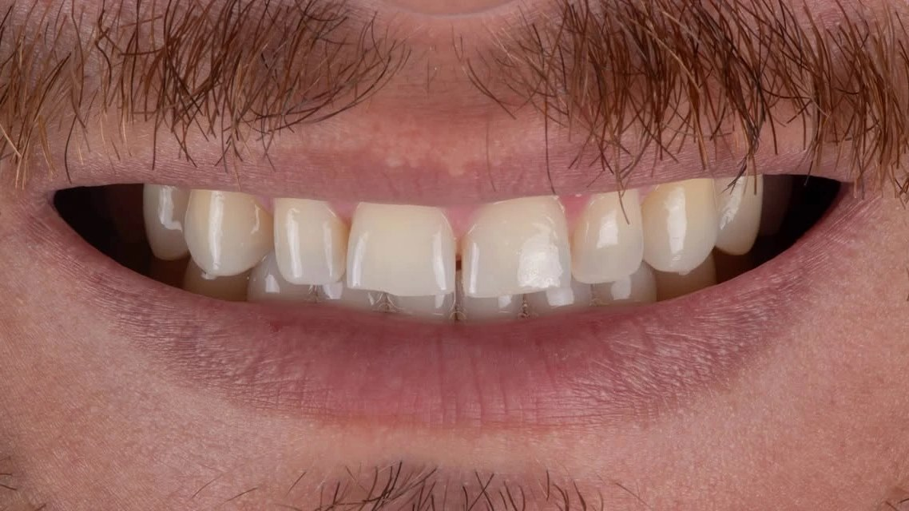
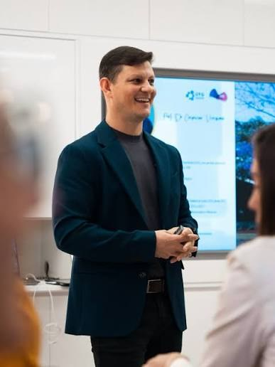
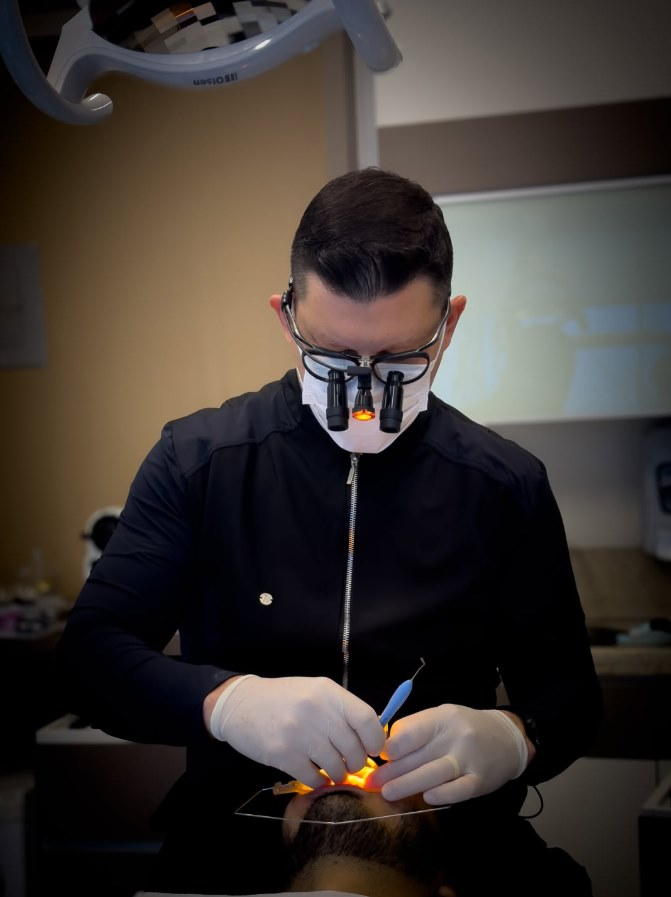

Curso
Curso de Infiltração Resinosa
Apoio: DMG Brasil AcademyDo diagnóstico ao acabamento: o protocolo da infiltração resinosa explicado por quem estuda a técnica na pós-graduação da UFG.
Quero saber do cursoProf. Dr. Crisnicaw Veríssimo, professor de Dentística da Universidade Federal de Goiás, ensina dentistas no curso de infiltração resinosa e na mentoria em resinas compostas.
Mestre e Doutor em Odontologia · Professor da UFG

A infiltração resinosa usa uma resina de baixíssima viscosidade que penetra no esmalte desmineralizado. Depois de polimerizada, ela devolve ao esmalte uma aparência próxima à do esmalte sadio, e a mancha branca deixa de aparecer.




Resultados variam de caso para caso.

Do diagnóstico ao acabamento: o protocolo da infiltração resinosa explicado por quem estuda a técnica na pós-graduação da UFG.
Quero saber do curso

Acompanhamento direto com o professor para evoluir nas suas restaurações em resina composta.
Quero saber da mentoria
Graduado, mestre e doutor em Odontologia pela Universidade Federal de Uberlândia, com um ano de pesquisa na University of Tennessee (EUA) durante o doutorado e pós-doutorado na UFU. Hoje é Professor Adjunto da Faculdade de Odontologia da UFG e professor do Programa de Pós-graduação em Odontologia, onde orienta pesquisas de mestrado e doutorado sobre infiltração resinosa.
Manchas brancas no esmalte, como as que aparecem depois do aparelho ortodôntico, lesões iniciais de cárie sem cavidade, fluorose e hipomineralização. A indicação depende do diagnóstico de cada caso.
O infiltrante resinoso Icon, da DMG.
Cirurgiões-dentistas.
Datas, vagas e valores da próxima turma são passados pelo WhatsApp.
Formato e duração são passados pelo WhatsApp.
Tem manchas brancas nos dentes? Você pode ser paciente nos cursos.
Quero ser paciente